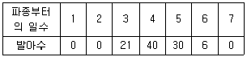
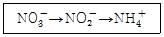
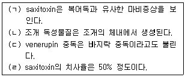

유기농업기사 (2012-05-20 기출문제)
1과목: 재배원론
1. 작물의 습해(濕害)에 대한 설명으로 옳은 것은?
- 뿌리조직이 목화(木化)하면 습해에 약해진다.
- 부정근(不定根)의 발생력이 크면 습해에 약하다.
- 잎이 지하의 줄기에 착생하면 내습성이 커진다.
- 습해발생 시 비료는 심층시비를 하는 것이 좋다.
(정답률: 55%)

2. 다음 중 작물과 저항성의 연결이 알맞은 것은?
- 밭벼 - 내건성작물
- 수수 - 내습성작물
- 감자 - 내산성작물
- 고구마 – 내염성작물
(정답률: 50%)
3. 토양의 대소 공극이 고루 섞여 작물 생육에 가장 알맞은 토양구조는?
- 입단(粒團)구조
- 이상(泥狀)구조
- 단립(單粒)구조
- 사양토
(정답률: 79%)
4. 논에 암모니아태질소를 시용하여 질화작용이 발생하는 경우에 대한 설명으로 옳은 것은?
- 탈질작용과는 관계가 없다.
- 암모니아화성균에 의해서 일어난다.
- 질산태질소는 토양교질에 흡착되지 않는다.
- 암모니아태질소를 환원층에 시용시 일어난다.
(정답률: 44%)
5. 기원지가 지중해 연안인 작물로 짝지어진 것은?
- 배추, 콩, 자운영
- 양배추, 상추, 티머시
- 고추, 토마토, 땅콩
- 수박, 참외, 수수
(정답률: 78%)
6. 작물의 초형(plant type)과 군락의 수광태세를 개선하기 위한 재배적 방안으로 적합하지 않은 것은?
- 벼에서 규산과 칼륨을 충분히 시용하여 잎을 직립으로 만든다.
- 맥류에서 드릴파 재배보다 광파 재배를 하는 것이 수광태세가 좋아지고 지면증발량도 적어진다.
- 재식밀도와 비배관리는 초형과 수광태세에 영향을 미치므로 적절히 관리한다.
- 벼와 콩에서 밀식을 할 때에는 줄사이를 넓히고, 포기사이를 좁게 한다.
(정답률: 45%)
7. 작물품종의 도복저항성에 대한 설명 중에서 잘못된 것은?
- 도복지수는 간장, 수중, 줄기의 강도로 계산한다.
- 도복지수를 낮추기 위하여 좌절중을 작게 해야 한다.
- 도복지수가 작은 품종은 내도복성이 크다.
- 도복지수를 낮추기 위하여 무조건 단간종을 육성하면 기계수확이 곤란해진다.
(정답률: 54%)
8. 육묘 중 상토의 EC가 낮게 나타날 때의 원인이나 대책이 아닌 것은?
- 원인 - 관수량이 적어 식물체의 무기염 흡수가 많아질 때
- 원인 - 시비량이 지나치게 부족할 때
- 대책 - 시비량을 늘린다.
- 대책 - 시비 횟수를 늘린다.
(정답률: 57%)
9. 작물의 개화기 조절과 관계가 먼 것은?
- 일장효과
- 버널리제이션
- 감온성
- T/R률
(정답률: 알수없음)
10. 지온상승에 가장 효과가 큰 파장은?
- 300 ~ 400nm
- 400 ~ 500nm
- 500 ~ 600nm
- 770nm 이상
(정답률: 36%)
11. 도복의 유발조건을 바르게 설명한 것은?
- 키가 작은 품종은 대가 튼튼해도 도복이 심하다.
- 칼륨, 규산이 부족하면 도복이 유발된다.
- 토양환경과 도복은 상관이 없다.
- 밀식은 도복을 적게 한다.
(정답률: 80%)
12. 수분이 부족할 때 내건성을 증대시키는 식물호르몬은?
- auxin
- gibberellin
- cytokinin
- abscissic acid
(정답률: 42%)
13. 다음과 같은 종자발아조사에서 발아속도의 값은?

- 3.5
- 16.2
- 24.0
- 97.0
(정답률: 50%)
14. 지베렐린의 재배적 이용과 관계가 먼 것은?
- 발아촉진
- 화성의 유도
- 경엽의 신장촉진
- 과실의 후숙촉진
(정답률: 65%)
15. 벼의 냉해를 줄이기 위한 방법은?
- 질소비료 증시, 물떼기
- 만기재배, 만식재배
- 다주밀식, 중간낙수
- 심수관개, 보온육묘
(정답률: 59%)
16. 밀의 일장 감응형은?
- LL 식물
- ll 식물
- lL 식물
- Sl 식물
(정답률: 39%)
17. 다음 중 배유종자로만 나열된 것은?
- 콩, 땅콩, 보리
- 벼, 보리, 옥수수
- 벼, 보리, 팥
- 옥수수, 콩, 팥
(정답률: 54%)
18. 동·상해의 피해를 줄이기 위한 응급대책이 아닌 것은?
- 연소법
- 피복법
- 살수빙결법
- 경화법
(정답률: 58%)
19. 저위도 지방에서 가장 다수성을 가져올 수 있는 기상생태형은?
- 감온형
- 감광형
- 기본영양생장형
- 세 기상생태형 모두 안 된다.
(정답률: 69%)
20. 파종기를 결정하는 요인을 잘못 설명한 것은?
- 맥류에서 추파성 정도가 높은 품종은 만파하는 것이 좋다.
- 감자는 평지에서는 이른 봄에 파종되나 고랭지에서는 늦봄에 파종된다.
- 봄채소는 조파하는 것이 한해가 경감된다.
- 출하기를 조절하기 위해 촉성재배나 억제재배를 한다.
(정답률: 54%)
2과목: 토양비옥도 및 관리
21. 다음 중 모암이 토양으로 변화하는 풍화작용에 대한 설명으로 틀린 것은?
- 모암에서 모재로 되는 과정은 풍화작용을 따른다.
- 모재에서 토양으로 되는 과정은 풍화작용과 토양생성작용을 따른다.
- 풍화작용은 물리적, 화학적, 생물적 풍화작용으로 구분된다.
- 물리적, 화학적, 생물적 풍화작용은 각각 일어나며, 그 결과는 토양의 질로 나타난다.
(정답률: 59%)
22. 다음 중 겨울철 호밀을 이용한 녹비이용 재배의 장점이 아닌 것은?
- 뿌리에 의한 토양 물리성 개선
- 피복에 의한 토양침식 억제효과
- 양분용탈에 의한 지하수 오염을 저감
- 공중질소 고정에 의한 화학비료 대체효과
(정답률: 67%)
23. 다음 중 불용성인 인광석에 황산을 처리하여 수용성인 속효성 비료로 제조한 것은?
- 중과린산석회
- 과린산석회
- 용성인비
- 용과린
(정답률: 37%)
24. 질소화합물이 토양미생물에 의해 다음과 같은 순서로 그 형태가 바뀌는 작용을 무엇이라 하는가?

- 질산환원작용
- 질산화작용
- 질소고정작용
- 암모니아화성작용
(정답률: 50%)
25. 밭이나 산림토양에서 주요 원소의 유실 순서에 있어 다음 중 가장 유실되기 쉬운 원소는?
- Na
- Ca
- SiO2
- Al2O3
(정답률: 54%)
26. 다음 중 토양의 토성에 있어 공극률이 가장 높은 것은?
- 양토
- 세사양토
- 사토
- 식양토
(정답률: 40%)
27. 본답점토함량이 10%인 논을 18cm 작토깊이의 15% 점토함량으로 조절하고자 25% 객토원으로 객토를 하고자 할 때 필요한 객토시용(톤/10a)량은 얼마인가? (단, 작토와 객토원의 가비중은 1.2, 상수는 10으로 한다.)
- 7.2톤
- 72톤
- 8.2톤
- 82톤
(정답률: 47%)
28. 다음 중 염해지 토양에 관한 설명으로 옳은 것은?
- 염해지 토양은 일반 논토양보다 Na 함량은 매우 높고, K, Mg의 함량은 낮다.
- 염분농도가 감소할수록 제타단위가 감소하고, 교질은 분산된다.
- 토양 내 규산 함량이 낮아 벼를 재배 시 규산시용이 필수적이다.
- 밭작물 재배 시 석고를 시용하면 교질입자의 전위를 낮출 수 있다.
(정답률: 45%)
29. 다음 중 토양유기물 분해에 적절한 조건이 아닌 것은?
- 혐기성 조건일 때
- 온도가 25 ~ 35℃ 일 때
- 토양산도가 중성에 가까울 때
- 토양수분이 -0.1 ~ -0.7 bar 수준일 때
(정답률: 67%)
30. 다음 중 침식의 형태에 있어 일시에 토양의 유실이 가장 많이 일어날 수 있는 침식은?
- 표면침식
- 우곡침식
- 우적침식
- 계곡침식
(정답률: 53%)
31. 다음 중 군단위 정도의 범위 또는 개개의 농장, 목장 등에 이용하고자 실시하는 조사로서 분류단위는 토양통이 사용되며 1 : 25000 축척도를 사용하는 토양조사는 무엇인가?
- 개략토양조사
- 반정밀토양조사
- 정밀토양조사
- 상내토양조사
(정답률: 83%)
32. 다음 중 특이산성 토양의 특성에 대한 설명으로 옳지 않은 것은?
- 활성 알루미늄의 함량이 높다.
- 미생물 활동으로 유기물 분해가 잘 된다.
- 강 하류의 배수 불량한 지역에 주로 분포한다.
- 토양을 건조시키면 황이 산화되어 pH 3.5 정도까지 낮아진다.
(정답률: 32%)
33. 다음 중 식물이 토양으로부터 주로 흡수하는 원소가 아닌 것은?
- 황
- 탄소
- 질소
- 마그네슘
(정답률: 60%)
34. 다음 중 토양교질에 대한 설명으로 틀린 것은?
- 입경이 1㎛ 이하인 입자를 말한다.
- 단위 g당 입자표면적이 미사보다 크다.
- 낮은 수분 보유능력을 가지고 있다.
- 양이온 치환능력을 가지고 있다.
(정답률: 78%)
35. 다음 중 토성 결정과 관련되는 용어로 볼 수 없는 것은?
- 삼각도표
- 용적밀도
- 촉감법
- Stokes 공식
(정답률: 59%)
36. 다음 중 비료의 반응에 대한 설명으로 옳은 것은?
- 생리적 반응이란 비료 수용액의 고유반응을 말한다.
- 식물에 대하여 중요한 비료반응은 화학적 반응이다.
- 용성인비, 토마스인비, 나뭇재는 화학적, 생리적으로 염기성 비료이다.
- 유기질 비료는 분해 시 생성되는 젖산, 초산 등의 유기산으로 인하여 반응이 일정한 생리적 산성비료이다.
(정답률: 57%)
37. 손의 감각을 이용한 토성 진단 시 수분이 포함되어 있어도 서로 뭉쳐지는 특성이 없을 뿐만 아니라 손가락을 이용하여 띠를 만들 때에도 띠를 형성하지 못하는 토성은?
- 양토
- 식양토
- 사토
- 미사질양토
(정답률: 47%)
38. 다음 중 토양에 다량 시용했을 때 질소기아현상을 가장 심하게 나타낼 수 있는 유기물은?
- 보릿짚
- 알팔파
- 감자
- 콩깻묵
(정답률: 알수없음)
39. 다음 중 호수나 바다의 부영양화(富營榮養化)를 일으키는 결정적 원소로만 나열된 것은?
- N, K
- N, S
- N, P
- P, K
(정답률: 63%)
40. 다음 중 점토입자에 배위자교환에 의한 특이흡착을 하므로 토양에서 이동이 가장 어려운 성분은?
- P
- N
- Ca
- K
(정답률: 38%)
3과목: 유기농업개론
41. 다음 중 유기생산 체계의 목적과 가장 거리가 먼 것은?
- 토양의 비옥도 유지
- 토양의 생물학적 활동 촉진
- 재생 불가능한 자원 사용의 최대화
- 체계 전체의 생물학적 다양성을 증진
(정답률: 60%)
42. 제초제를 쓰지 않고 친환경적으로 벼를 재배하려면 잡초 생태를 알아야 하는데 다음 중 작물과 잡초의 경합에 대한 설명으로 옳은 것은?
- 만생종 품종은 초관을 빨리 형성하므로 조숙종보다 잡초에 대한 경합력이 크다.
- 직파 작물은 일찍 심게 되므로 육묘 이식한 작물보다 잡초에 대한 경합력이 크다.
- 분얼이나 분지가 많은 초형의 품종은 직립 초형을 가진 품종보다 잡초에 대한 경합력이 크다.
- 재식밀도를 높이고 적기에 파종하면 잡초에 대한 경합력이 작아진다.
(정답률: 39%)
43. 다음 중 동일한 포장에서 같은 종류의 작물을 계속 재배하는 것을 무엇이라 하는가?
- 돌려짓기
- 이어짓기
- 사이짓기
- 답전윤환
(정답률: 84%)
44. 다음 유기자재에서 사과밭에 발생하는 응애류와 개각충에 살포할 수 있는 자재는?
- 기계유제
- 키토산
- 보르도액
- 벤토나이트
(정답률: 47%)
45. 다음 중 유기농업에서 가축분뇨로 인한 환경오염을 줄이기 위한 적극적인 대책으로 거리가 먼 것은?
- 액비화사업
- 방류화사업
- 퇴비화사업
- 메탄가스화사업
(정답률: 57%)
46. 다음 중 벼 종자소독 시 냉수온탕침법을 실시할 때 가장 적절한 온탕의 물 온도는?
- 15℃
- 25℃
- 35℃
- 55℃
(정답률: 48%)
47. 다음 중 친환경농자재의 종류에 있어 병해충 관리를 위하여 사용이 가능한 자재에 해당되지 않는 것은?
- 크롬(Cr) 처리 등 화학적 공정을 거치지 아니한 젤라틴
- 화학합성비누 및 합성세제는 사용하지 않은 비눗물
- 제충국(Chrysanthemum cinerariaefolium)에서 추출된 천연 제충국 추출물
- 합성첨가물이 포함되어 있지 아니한 식품 및 섬유공장의 유기적 부산물
(정답률: 62%)
48. 다음 중 우리나라 시설재배 토양의 문제점으로 볼 수 없는 것은?
- 염류의 집적
- CEC의 증가
- 연작장해의 발생
- 토양의 미생물상 악화
(정답률: 알수없음)
49. 다음 중 합성품종으로 육종하는 대표적인 작물은?
- 벼
- 배추
- 목초
- 무
(정답률: 47%)
50. 다음 중 일반농가가 유기축산으로 전환하거나 유기가축이 아닌 가축을 유기농장으로 입식하여 유기축산물을 생산ㆍ판매하려는 경우 축종과 최소 사육기간이 잘못 연결된 것은?
- 오리(식육) : 입식 후 출하 시까지 최소 6주 이상
- 육계(식육) : 입식 후 출하 시까지 최소 3주 이상
- 돼지(식육) : 입식 후 출하 시까지 최소 3개월 이상
- 육우(식육) : 입식 후 출하 시까지 최소 12개월 이상
(정답률: 70%)
51. 다음 중 유기종자의 구비조건과 가장 거리가 먼 것은?
- 고수량성 종자
- 병해충 저항성이 강한 종자
- 화학적 소독을 거치지 않은 종자
- 적어도 1세대를 유기농법적으로 재배한 작물로부터 채종된 종자
(정답률: 70%)
52. 다음 중 토양미생물의 활용에 있어 세균류의 일반적 특징이 아닌 것은?
- 포자 형성
- 급속한 번식과 생장 가능
- 유기물의 분해속도가 빠름
- 일산화탄소를 산화하여 이산화탄소 배출
(정답률: 31%)
53. 다음 중 탄질비가 가장 낮은 것은?
- 완숙 퇴비
- 볏짚
- 밀짚
- 톱밥
(정답률: 39%)
54. 다음 중 볍씨 소독으로 방제가 가능하지 않은 병은?
- 잎마름선충병
- 키다리병
- 도열병
- 오갈병
(정답률: 38%)
55. 미국의 소규모 유기농가들은 대규모 유기농가들과 싸워야 하는 어려운 처지가 되었다. 이 때문에 일부 소규모 농가들은 “진정한 유기농법”을 주장하며 전국시장 대신 농장 근처의 지역에만 유기농산물을 공급하며 신선함과 품질을 강조하고 있는 운동은?
- CSA
- FDA
- SPS
- CMS
(정답률: 59%)
56. 다음 중 시설재배를 위한 시설의 기본 구비조건에 대한 설명으로 틀린 것은?
- 내구연한이 길고 시설비가 적게 들어야 한다.
- 재배면적을 최대한 활용할 수 있어야 한다.
- 최악의 기상조건에도 견딜 수 있어야 한다.
- 환경조건이 좋으면 재배가 저절로 된다.
(정답률: 72%)
57. 다음 중 특성이 다른 작물의 조합에 따른 윤작의 효과와 가장 거리가 먼 것은?
- 토양 병충해를 경감시킬 수 있다.
- 작물의 양분수지상 균형이 이루어지고 염기균형이 유지된다.
- 환원 가능한 유기물의 생산을 통한 토양유기물의 감소 및 뿌리혹에 의한 토양질소의 생산이다.
- 토양의 물리성 및 미생물상을 개선하여 토양양분의 유효화를 증가시키고 근계를 발달시켜 토양에 존재하는 양분의 흡수능력을 증대시킨다.
(정답률: 47%)
58. 다음 중 유기축산물의 질병관리에 관한 설명으로 틀린 것은?
- 약초 및 천연물질을 이용하여 치료를 할 수 있다.
- 생산성 촉진을 위해서 성장촉진제 및 호르몬제를 사용할 수 있다.
- 가축의 기생충감염 예방을 위하여 구충제 사용과 가축전염병이 발생하거나 퍼지는 것을 막기 위한 예방백신을 사용할 수 있다.
- 적정한 예방관리에도 불구하고 질병이 발생한 경우 수의사의 처방에 따라 질병을 치료할 수 있으며, 이 경우 동물용의약품을 사용한 가축은 해당 약품 휴약기간의 2배가 지나야 유기축산물로 인정할 수 있다.
(정답률: 82%)
59. 다음 중 녹비작물의 토양 혼입과 관련한 설명으로 옳은 것은?
- 녹비작물의 수확적기는 종실의 완숙기이다.
- 녹비작물의 토양 내 분해속도는 늙은 시기에 수확한 것이 어린 시기에 수확한 것보다 빠르다.
- 녹비작물을 완숙기에 수확했다면 길게 절단하여 토양에 혼입하는 것이 좋다.
- 녹비작물을 토양에 혼입한 후 후작물을 파종하는 시기는 혼입 후 2~3주 정도가 좋다.
(정답률: 67%)
60. 다음 중 유기농업의 병충해 방제에 있어 경종적 방제법으로 볼 수 없는 것은?
- 품종의 선택
- 병원 미생물 이용
- 종자의 선택
- 수확물의 건조
(정답률: 69%)
4과목: 유기식품 가공.유통론
61. 아이스크림 제조 시 균질의 목적이 아닌 것은?
- 지방 응집 방지
- 기포성 억제
- 숙성기간 단축
- 증용률 향상
(정답률: 48%)
62. 유기농산물의 유통경로로 가장 활용되지 않는 경로는?
- 생산자(단체) - 소비자(단체)
- 생산자(단체) - 생협소비자단체 - 소비자
- 생산자(단체) - 산지시장 - 도매시장 - 소비자
- 생산자(단체) - 전문직판장 - 소비자
(정답률: 65%)
63. 유기식품의 가스충전포장에 일반적으로 사용되는 가스 성분 중 호기성뿐만 아니라 혐기성균에 대해서도 정균작용을 나타내며, 고농도 사용 시 제품에 이미, 이취를 발생시킬 수 있는 가스성분은?
- 산소
- 질소
- 탄산가스
- 아황산가스
(정답률: 70%)
64. 식품의 동결속도에 미치는 영향이 가장 적으며, 동결속도식(Plank식)에서도 직접적으로 사용되지 않는 인자는?
- 식품 의 온도
- 식품의 양
- 식품 의 밀도
- 냉매의 온도
(정답률: 50%)
65. 농산물 수요의 법칙의 예외 사항에 대한 설명으로 틀린 것은?
- 기펜재 : 소득이 증가하고 열등재 가격이 하락하면 열등재 수요가 감소한다.
- 가수요 : 가격이 더욱 상승하리라 예상되는 경우 사전 매점현상으로 수요량이 증가한다.
- 위풍재 : 단순히 부유함을 과시하기 위한 재화로 값이 비싸면 더 잘 팔린다.
- 중간재 : 습관이나 체면 때문에 소비가 이루어지는 경우에 발생한다.
(정답률: 58%)
66. 다음 중 식품 부패에 영향을 주는 주요 인자가 아닌 것은?
- 온도
- 색깔
- 수분
- pH
(정답률: 67%)
67. 방사선 피폭과 관련한 식품위생에 대한 설명으로 틀린 것은?
- 방사능 물질이 대기로 방출되어 낙진 또는 비를 통해 토양이나 해양을 오염시키며, 이러한 환경에 의해 농·수·축산물에 흡수 축적된 방사능 물질이 인체에 흡수된다.
- 잎 표면이 위를 향하며 잎이 넓은 채소류는 다른 채소에 비하여 비교적 높은 농도의 방사능물질이 검출된다.
- 식품 중의 방사성물질 오염 여부를 검사하는 항목은 세슘(134CS + 137CS), 스트론튬(90Sr)이다.
- 다시마와 미역 등에는 요오드가 함유되어 있으나, 함유되는 안정 요오드량이 적고 일정하지 않아 피폭 예방에 대한 효과는 미미하다.
(정답률: 54%)
68. 조개류의 독성물질에 대한 설명으로 옳은 것을 모두 고르면?

- (ㄱ), (ㄴ)
- (ㄴ), (ㄷ)
- (ㄱ), (ㄷ)
- (ㄷ), (ㄹ)
(정답률: 54%)
69. 식품 가공 및 저장에 관한 설명 중 틀린 것은?
- 유기식품가공이라 함은 식품 원재료를 화학적 또는 생물학적인 방법은 사용하지 않고 물리적인 방법으로 처리를 하여 품질과 보존성을 향상시키는 것을 말한다.
- 식품의 저장이라 함은 식품 원재료를 그대로 혹은 가공하여 변질, 부패 등 여러 가지 해를 방지할 수 있도록 처리하여 보존성을 높이는 것을 말한다.
- 식품을 가공하는 목적은 식품의 맛, 영양가 등을 높이고 보존기간을 연장하거나 장기화시킴으로써 식품의 이용범위를 확대하고, 식품의 가치를 증가시키는데 있다.
- 식품의 저장방법에는 당, 염, 산 등을 이용한 화학적 보존, 발효 등에 의한 생물학적 보존 및 열처리, 건조, 농축 냉장, 냉동, 포장 등의 물리적 보존의 방법 등이 있다.
(정답률: 59%)
70. 식품위생법에 근거하여 식품 취급에 종사할 수 없는 질병이 아닌 것은?
- 감염성 결핵
- 장출혈성대장균감염증
- 세균성이질
- 유행성이하선염
(정답률: 67%)
71. 벤조피렌에 대한 설명으로 틀린 것은?
- 국제암연구소에서는 발암물질로 분류하고 있다.
- 지방함유 식품과 불꽃이 직접 접촉할 때 가장 많이 생성된다.
- 3개의 아민 작용기를 가지고 있고, 잔류기간이 짧다.
- 탄수화물, 단백질, 지방 등이 불완전 연소되어 생성된다.
(정답률: 69%)
72. 우유의 성분 조성에 영향을 미치는 인자에 대한 설명으로 틀린 것은?
- 초유는 단백질, 지방 및 회분 함량이 많고 유당 함량이 적다.
- 같은 품종, 같은 환경에서 사육하더라도 지방 함량의 차이가 크게 날 수 있다.
- 착유 초기에는 지방 함량이 높고 착유 종료 시에는 지방 함량이 낮다.
- 조사료의 양이 부족하면 지방률이 현저히 감소한다.
(정답률: 43%)
73. MAP 포장방법에 대한 설명 중 틀린 것은?
- 피포장물을 플라스틱 필름이나 피막제로 코팅한다.
- 포장지 내부의 가스조성이 저산소, 고탄산가스 농도로 변화된다.
- 호흡작용, 증산작용은 억제되나 에틸렌 생성은 촉진된다.
- 과습으로 인한 부패나 산소부족에 따른 호흡장해가 발생할 수 있다.
(정답률: 59%)
74. 100℃의 물 1g을 냉동하여 0℃의 얼음으로 만들 경우 냉동 부하는 얼마인가? (단, 에너지 손실은 없다고 가정하며 물의 비열 1cal/g℃, 수증기의 잠열 540cal/g, 얼음의 잠열 80cal/g이다.)
- 80cal
- 100cal
- 180cal
- 720cal
(정답률: 67%)
75. 다량의 열변성이 일어나기 쉬운 유제품이나 주스 등의 액체를 가열, 냉각, 살균하는데 널리 사용하는 열교환기는?
- 재킷형 열교환기
- 코일형 열교환기
- 보테이터식 표면 긁기 열교환기
- 판상식 열교환기
(정답률: 60%)
76. 면 분류상 중화면이 해당되는 것은?
- 선절 면류
- 압축 면류
- 즉석 면류
- 신연 면류
(정답률: 54%)
77. 유기식품 가공시설에서 유해생물을 차단하는 방식이 아닌 것은?
- 전동청소기 사용
- 모기약 살포
- 서식처와 먹이 제거
- 벽의 틈이나 구멍 밀폐
(정답률: 91%)
78. 농식품의 물류기능이 아닌 것은?
- 수송
- 저장
- 가공
- 거래
(정답률: 57%)
79. 농산물 가격의 파동이 심한 이유에 대한 설명으로 틀린 것은?
- 생산에 많은 시간이 소요되어 수요와 공급의 불균형을 심화시킨다.
- 수요가 급증할 경우 공급의 비탄력성으로 물량이 바로 증가하지 못하기 때문에 가격이 급등한다.
- 초과 수요 발생 시 후발 생산자들이 생산한 농산물의 공급물량으로 인해 초과공급 현상이 발생하여 가격은 더욱 상승한다.
- 가격 급등 시 새로운 생산자가 생겨도 재배기간 중에 농산물 가격이 계속 상승함에 따라 계속적인 가격상승이 발생한다.
(정답률: 77%)
80. 김치가 제조 공정상 상대적으로 위생적인 측면에서 안전한 이유에 해당하는 것은?
- 원료의 세척, 소금첨가, 젖산균 번식
- 소금첨가, 미생물번식, 억제물질 첨가, 설탕첨가
- 설탕첨가, 미생물번식, 억제물질 첨가, 원료의 세척
- 냉장보관, 고초균 번식, 저장용기의 살균
(정답률: 84%)
5과목: 유기농업관련 규정
81. 다음 중 유기가공식품인증제도 운영지침상 관련 인증기준에 따라 “유기가공식품” 인증을 받은 사업자가 인증품에 표시하여야 하는 사항과 관련이 가장 적은 것은?
- 도형
- 작업자명
- 인증번호
- 인증기관명
(정답률: 67%)
82. 유기식품의 생산·가공·표시·유통에 관한 Codex 가이드라인에서 규정한 용어의 정의로 적합하지 않은 것은?
- “인증기관”은 권한을 갖는 공식 정부기관을 말한다.
- “농산물/농산물계 제품”은 인간의 섭취 또는 동물 사료용으로 판매되는 모든 가공, 비가공 제품을 말한다.
- “검사”란 요건에 부합하는지 확인하기 위해 식품, 원료, 가공, 유통의 관리체계 또는 식품을 검사하는 것을 말한다. 유기식품 검사에는 최종제품 시험 및 생산, 가공체계 검사도 포함된다.
- “인증”이란 식품이나 식품 통제체계가 요건과 일치한다는 것을 공식 인증기관이나 공인 인증기관이 서면 또는 이와 동등한 효력을 갖는 수단으로 보증하는 것을 말한다.
(정답률: 65%)
83. 다음 중 유기농산물 함량에 따른 표시기준의 표시방법으로 틀린 것은 ?
- 유기농산물 100% 사용한 식품은 “유기 100%”라는 용어를 제품명에 사용할 수 있다.
- 95% 이상 유기농산물인 식품은 “유기”라는 용어를 제품의 어느 장소에도 표시할 수 있다.
- 70% 이상 95% 미만 유기농산물인 식품은 최종 제품에 남아있는 원재료의 70% 이상 95% 미만이 유기농산물이어야 한다.
- 70% 미만 유기농산물인 식품은 해당 원재료명의 일부로 “유기”라는 용어를 표시할 수 있으며, 주표시면을 제외한 표시면에 표시할 수 있다.
(정답률: 65%)
84. 유기식품의 생산ㆍ가공ㆍ표시ㆍ유통에 관한 Codex 가이드라인에서 유기 생산의 원칙 중 가축 및 가축제품에 있어 양봉 및 꿀벌 제품의 병충해 관리를 위해 허용되는 것이 아닌 것은?
- 포름산
- 순수 니코틴
- 유황
- 증기와 직사 화염
(정답률: 75%)
85. 유기식품의 생산·가공·표시·유통에 관한 Codex 가이드라인에서 유기 생산의 원칙 중 식물과 식물제품에 있어 토양의 비옥도와 생물활동의 유지ㆍ증진시키는 방법으로 적절하지 않은 것은?
- 두과작물을 다년간 윤작한다.
- 녹비작물을 다년간 윤작한다.
- 천근성작물을 다년간 윤작한다.
- 미생물이나 식물성분으로 만든 제품을 사용하여 퇴비화를 촉진시킨다.
(정답률: 72%)
86. 식품산업진흥법에 따라 우수식품인증을 받은 식품의 품질수준의 유지와 소비자보호를 위하여 필요하다고 인정되는 경우 관련 담당자로 하여금 사후관리로 실시할 수 있도록 한 것은?
- 종사자의 위생교육 이수사항 점검
- 우수식품인증기준에의 적합성의 조사
- 인증을 획득한 자의 관계장부 또는 서류의 열람
- 인증을 받은 식품의 시료를 수거하여 조사를 하거나 전문시험연구기관 등에 시험의뢰
(정답률: 38%)
87. 식품산업진흥법의 유기가공식품의 인증기준에 있어 유기원료 비율의 계산법에 관한 설명으로 적합하지 않은 것은?
- 가공보조제 등 최종제품에 잔류하지 않는 것도 그 중량을 포함한다.
- 유기원료의 비율은 물과 소금을 제외한 제품의 중량에 대한 유기원료 중량의 비율과 같다.
- 원료 및 첨가물 중량의 계측 시점은 해당 원료가 가공공정에 투입되는 시점을 기준으로 한다.
- 유기원료의 비율계산은 유기가공식품의 생산에 투입된 모든 원료의 중량, 첨가물의 중량을 기초로 하여 계산한다.
(정답률: 75%)
88. 친환경농업육성법에 의한 친환경농업육성계획에 포함되어야 하는 내용이 아닌 것은?
- 농업의 공익적 기능 증대 방안
- 육성계획 추진 재원의 조달 방안
- 유전자변형농산물의 표시 실태 및 개선방안
- 친환경농산물의 생산ㆍ유통의 활성화 및 소비촉진 방안
(정답률: 77%)
89. 친환경농업육성법 시행규칙에 의한 친환경농산물의 인증기준에서 유기농림산물의 병해충 및 잡초의 방제ㆍ조절방법으로 틀린 것은?
- 멀칭ㆍ예취 및 화염제초
- 덫ㆍ울타리ㆍ빛 및 소리와 같은 기계적 통제
- 식물ㆍ농장퇴비 및 돌가루 등에 의한 생체역학적 수단
- 일반 농자재를 적극적으로 사용한 후 기계적인 방법을 제외하고 물리적인 방법으로만 방제
(정답률: 알수없음)
90. 친환경농업육성법 시행규칙에 의한 친환경농산물의 인증기준에서 유기농림산물의 재배포장은 목초를 제외한 다년생 작물의 경우 얼마의 전환기간 이상 일정 규정에 따른 재배방법을 준수해야 하는가?
- 최초 수확 전 1년의 기간
- 최초 수확 전 3년의 기간
- 최초 수확 후 1년의 기간
- 최초 수확 후 3년의 기간
(정답률: 65%)
91. 식품산업진흥법 시행규칙상 유기가공식품의 인증에 있어 유기적 취급의 기준 중 기록 및 접근보장에 관한 설명으로 틀린 것은?
- 사업자는 유기식품의 취급 전반에 관한 기록을 작성하여야 하며, 최소한 2년간 보존하여야 한다.
- 사업자는 가공과 유통의 유기적 관리체계를 구축하기 위하여 문서화된 계획을 수립하여야 하며, 해당 유기취급계획을 인증기관과 협의하여야 한다.
- 사업자는 가공, 포장, 저장, 운송, 판매 그 밖에 취급에 관한 유기적 관리 지침을 문서로 작성하고 보존하여야 한다.
- 사업자는 유기원료, 첨가물, 보조제, 세척제 그 밖에 투입자재의 구매, 입고, 출고, 사용에 관한 기록을 작성하고 보존하여야 한다.
(정답률: 50%)
92. 유기식품의 생산ㆍ가공ㆍ표시ㆍ유통에 관한 Codex 가이드라인에 따라 유기농법으로 전환하는 과정에 있는 제품은 유기농법을 사용하여 생산하기 시작한 후 얼마의 기간이 지나야“유기농법으로 전환 도중” 이라는 표시를 할 수 있는가?
- 6개월
- 12개월
- 24개월
- 36개월
(정답률: 65%)
93. 친환경농업육성법상 농림수산식품부장관은 관계 중앙행정기관의 장과 협의하여 몇 년마다 친환경농업의 발전을 위한 친환경농업 육성계획을 세워야 하는가?
- 2년
- 3년
- 5년
- 10년
(정답률: 94%)
94. 다음 중 친환경농업육성법에서 규정하는 부정행위에 해당하지 않는 것은?
- 거짓이나 그 밖의 부정한 방법으로 친환경농산물 인증 취득
- 인증품에 인증품이 아닌 농산물을 혼합하여 판매
- 인증품이 아닌 농산물을 관련 규정에 따라 친환경농산물로 광고
- 인증품이 아닌 농산물에 대하여 친환경농산물 표시와 유사한 외국어 표시 삭제
(정답률: 92%)
95. 다음 중 친환경농산물의 표시문자로 틀린 것은?
- 유기농산물(전환기)
- 유기재배농산물
- 천연축산물
- 무농약공산물
(정답률: 62%)
96. 유기식품의 생산ㆍ가공ㆍ표시ㆍ유통에 관한 Codex 가이드라인에서의 유기생산체계 목적과 가장 거리가 먼 것은?
- 체계 전체의 생물학적 다양성을 감축한다.
- 현지 농업 쳬계에서는 재생 가능한 자원에 의존한다.
- 어느 농장이든 전환기만 거치면 유기농장으로 자리 잡을 수 있게 한다.
- 농경의 결과로 야기되는 모든 형태의 토양, 물, 대기오염을 최소화 하고 토양, 물, 대기의 건강한 사용을 조장한다.
(정답률: 75%)
97. 유기식품의 생산ㆍ가공ㆍ표시ㆍ유통에 관한 Codex 가이드라인에서 규정하고 있는 검사/인증시의 최소 검사요건 및 예방조치로 가장 적합한 것은?
- 수입국은 수출국의 유기제품의 검사요건을 그대로 인정하여 적용해야 한다.
- 인증기관이 해당 구역을 방문 시에는 반드시 사전에 통보하여야 한다.
- 인증기관은 최소한 1년에 한 번씩 해당 구역 전체에 대해 물리적인 검사를 실시해야 한다.
- 사업자는 매년 1월 1일 농가별 작물생산 스케줄을 작성하여 통보한다.
(정답률: 55%)
98. 유기식품의 생산 ㆍ 가공 ㆍ 표시 ㆍ 유통에 관한 Codex 가이드라인에서 규정한 유기식품 생산에 허용되는 물질 중 특수한 조건 없이 사용이 가능한 식품 첨가제는?
- 젖산
- 염화칼슘
- 아르긴산(Arginic acid)
- 아라비아 수지(Arabic gum)
(정답률: 50%)
99. 다음 중 유기가공식품 인증신청서에 첨부할 구비서류로만 올바르게 나열된 것은?
- 경영관련 자료, 판매계획서
- 원료공급 약정서, 판매계획서
- 유기농산물가공품생산계획서, 원료공급약정서
- 식품품목제조보고서 사본, 유기취급계획서
(정답률: 48%)
100. 식품산업진흥법에 따른 유기가공식품 인증에 관한 규정으로 옳은 것은?
- 유기가공식품의 주원료는 친환경농산물이다.
- 유기사업자는 유기식품의 가공 및 유통과정에서 원료의 양분을 훼손하지 않아야 한다.
- 유기가공식품의 가공원료는 제조 시 원재료 이외의 어떠한 물질도 혼합해서는 안된다.
- 유기가공식품의 가공방법 중 추출을 위하여 에탄올, 물, 식물성 및 동물성 유지, 식초, 이산화탄소, 질소를 사용할 수 있다.
(정답률: 47%)